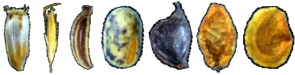

Overview
seedr is an R package that provides functions to fit
hydro and thermal time germination models. These models characterize
seed lots by two sets of parameters: (i) the physiological thresholds
(water, temperature) between which the seed lot can germinate, and (ii)
the physiological-time units that the seed lot needs to accumulate
before it can germinate. seedr fits the hydro time model of
Bradford (Gummerson 1986, Bradford 1990, Bewley et al. 2013) and the
thermal time model of Garcia-Huidobro (Garcia-Huidobro et al. 1982,
Gummerson 1986, Bewley et al. 2013). It allows to fit models to grouped
datasets, i.e. datasets containing multiple species, seedlots or
experiments.
Installation
Usage
library(seedr)
# seedr relies on physiotime(), a wrapper function that formats your data and fits a hydro/thermal time model
physiotime(grasses, # germination dataset
x = "psi", # experimental treatment
method = "bradford", # hydrotime model
groups = c("species")) # group dataset by species## A list of physiological time germination models
## calculated for the following 2 groups:
##
## species: Anisantha rubens
## Bradford's hydrotime model
## Water potential levels in experiment: -1.6 -1 -0.8 -0.6 -0.4 -0.2 0
## Theta - Hydrotime constant: 50.54
## Psib50 - Base water potential (median): -1.59
## Sigma of the base water potential: 0.4
## R2: 0.94
##
## species: Bromus hordeaceus
## Bradford's hydrotime model
## Water potential levels in experiment: -1.6 -1 -0.8 -0.6 -0.4 -0.2 0
## Theta - Hydrotime constant: 59.81
## Psib50 - Base water potential (median): -1.75
## Sigma of the base water potential: 0.38
## R2: 0.86
## References
- Bewley, J. D., Bradford, K. J., Hilhorst, H. W., & Nonogaki, H. (2013). Environmental Control of Germination. In Seeds: Physiology of Development, Germination and Dormancy, 3rd Edition (pp. 302-317). Springer, New York, NY.
- Bradford, K. J. (1990). A water relations analysis of seed germination rates. Plant Physiology, 94(2), 840-849.
- Garcia-Huidobro, J., Monteith, J. L., & Squire, G. R. (1982). Time, temperature and germination of pearl millet (Pennisetum typhoides S. & H.) I. Constant temperature. Journal of Experimental Botany, 33(2), 288-296.
- Gummerson, R. J. (1986). The effect of constant temperatures and osmotic potentials on the germination of sugar beet. Journal of Experimental Botany, 37(6), 729-741.